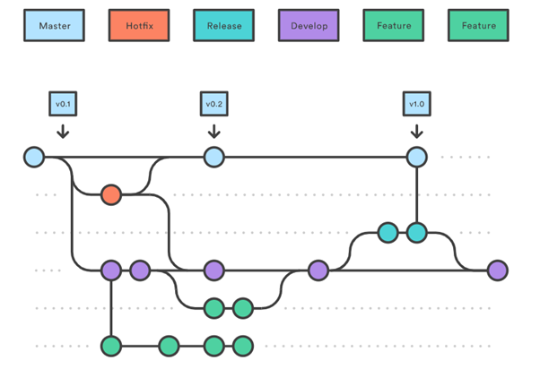

Branch의 종류
Gitflow Workflow에서는 항상 유지되는 메인 브랜치들(master, develop)과 일정 기간 동안만 유지되는 보조 브랜치들(feature, release, hotfix)을 포함하여 총 5가지의 브랜치를 사용한다.

1. Master(main) branch
Git에서 처음으로 저장소를 만들면 master 브랜치가 생성된다. 보통은 checkout을 통해 다른 브랜치로 옮겨가지 않는 이상 commit은 master branch에서 일어난다.
배포 이력을 관리하기 위해 사용하며 사용자에게 배포가 가능한 상태만 관리한다.
2. Develop branch
다음 출시 버전을 개발하는 브랜치로 기능 개발이 완료된 브랜치들을 병합하기 위해 사용된다.
구현하고자 하는 모든 기능이 다 구현되고 develop branch에 병합되어 배포가 가능한 상태가 되었다면 develop branch를 main branch에 merge한다.
평소에는 이 브랜치를 기반으로 개발한다.
3. Feature branch
기능을 개발하는 브랜치로 새로운 기능 개발 및 버그 수정이 필요할 때마다 develop branch로부터 분기한다.
Feature branch에서의 작업은 실시간으로 공유할 필요가 없기 때문에 보통 개발자의 로컬 저장소에서 관리하고, 개발이 완료되면 develop branch로 병합하여 다른 사람들과 공유한다.
Feature branch의 이름은 보통 ‘feature/[기능요약]’ 으로 작성한다.
1. ‘develop’ 브랜치에서 새로운 기능에 대한 feature 브랜치를 분기한다.
- git checkout -b feature/[기능이름] develop
2. 새로운 기능에 대한 작업 수행한다.
3. 작업이 끝나면 ‘develop’ 브랜치로 병합(merge)하고
- git checkout -b feature/login develop
- git merge feature/[기능이름]
4. 더 이상 필요하지 않은 feature 브랜치는 삭제한다.
- git branch -d feature/[기능이름]
5. 새로운 기능에 대한 ‘feature’ 브랜치를 중앙 원격 저장소에 올린다.(push)
- git push origin develop
4. Release branch
이번 출시 버전을 준비하는 브랜치로 배포를 위한 전용 브랜치를 사용함으로써 한 팀이 해당 배포를 준비하는 동안 다른 팀은 다음 배포를 위한 기능 개발을 계속할 수 있다.
딱딱 끊어지는 개발 단계를 정의하기에 좋다. 예를 들어, ‘이번 주에 버전 1.3 배포를 목표로 한다!’라고 팀 구성원들과 쉽게 소통하고 합의할 수 있다는 의미이다.
release branch의 이름은 보통 ‘release-1.2’ 으로 작성한다.
1. ‘develop’ 브랜치에서 배포할 수 있는 수준의 기능이 모이면 또는 정해진 배포 일정이 되면,
- release 브랜치를 분기한다.
> git checkout -b release-1.2 develop
- release 브랜치를 만드는 순간부터 배포 사이클이 시작된다.
- release 브랜치에서는 배포를 위한 최종적인 버그 수정, 문서 추가 등 릴리스와 직접적으로 관련된 작업을 수행한다.
- 직접적으로 관련된 작업들을 제외하고는 release 브랜치에 새로운 기능을 추가로 병합하지 않는다.
2. ‘release’ 브랜치에서 배포 가능한 상태가 되면(배포 준비가 완료되면),
- 배포 가능한 상태로 새로운 기능을 포함한 상태로 모든 기능이 정상적으로 동작 하는 상태이다.
- ‘master’ 브랜치에 병합한다. (이때, 병합한 커밋에 Release 버전 태그를 부여!)
> git checkout -b release-1.2 develop
> git merge release-1.2
> git tag -a 1.2
- 배포를 준비하는 동안 release 브랜치가 변경되었을 수 있으므로 배포 완료 후 ‘develop’ 브랜치에도 병합한다.
> git checkout develop
> git merge release-1.2
- 이때, 다음 번 배포(Release)를 위한 개발 작업은 ‘develop’ 브랜치에서 계속 진행해 나간다.
5. Hotfix branch
출시 버전에서 발생한 버그를 수정 하는 브랜치로 배포한 버전에 긴급하게 수정을 해야 할 필요가 있을 경우, ‘master’ 브랜치에서 분기하는 브랜치이다. ‘develop’ 브랜치에서 문제가 되는 부분을 수정하여 배포 가능한 버전을 만들기에는 시간도 많이 소요되고 안정성을 보장하기도 어려우므로 바로 배포가 가능한 ‘master’ 브랜치에서 직접 브랜치를 만들어 필요한 부분만을 수정한 후 다시 ‘master’브랜치에 병합하여 이를 배포해야 하는 것이다. 버그 수정만을 위한 ‘hotfix’ 브랜치를 따로 만들었기 때문에, 다음 배포를 위해 개발하던 작업 내용에 전혀 영향을 주지 않는다는 장점이 있다.
hotfix branch의 이름은 보통 ‘hotfix-1.2.1’로 작성한다.
1. 배포한 버전에 긴급하게 수정을 해야 할 필요가 있을 경우,
- ‘master’ 브랜치에서 hotfix 브랜치를 분기한다. (‘hotfix’ 브랜치만 master에서 바로 딸 수 있다.)
> git checkout -b hotfix-1.2.1 master
2. 문제가 되는 부분만을 빠르게 수정한다.
- 다시 ‘master’ 브랜치에 병합(merge)하여 이를 안정적으로 다시 배포한다.
> git checkout -b hotfix-1.2.1 master
> git merge hotfix-1.2.1
- 새로운 버전 이름으로 태그를 매긴다.
> git tag -a 1.2
3. hotfix 브랜치에서의 변경 사항은 ‘develop’ 브랜치에도 병합(merge)한다.
> git checkout develop
> git merge hotfix-1.2.1